Guía del módulo de Administración de CargaYa.
- Entra
- Panel
- Respaldo semanal
- Cambiar el PIN de alguien
- Agregar otro administrador
- Uso de la app
- Cobros: datos de Pago Móvil
- Cobros: aprobar pagos
- Compradores registrados
- Plano y zonas
- Carretilleros y credenciales
- Carretilleros con teléfono (interruptor)
- Reclamos por faltantes
- Avisos push
- Compartir los QR de registro
1Entra
- Abre CargaYa Administración en la PC o el teléfono.
- Escribe tu teléfono y tu PIN y toca Entrar.
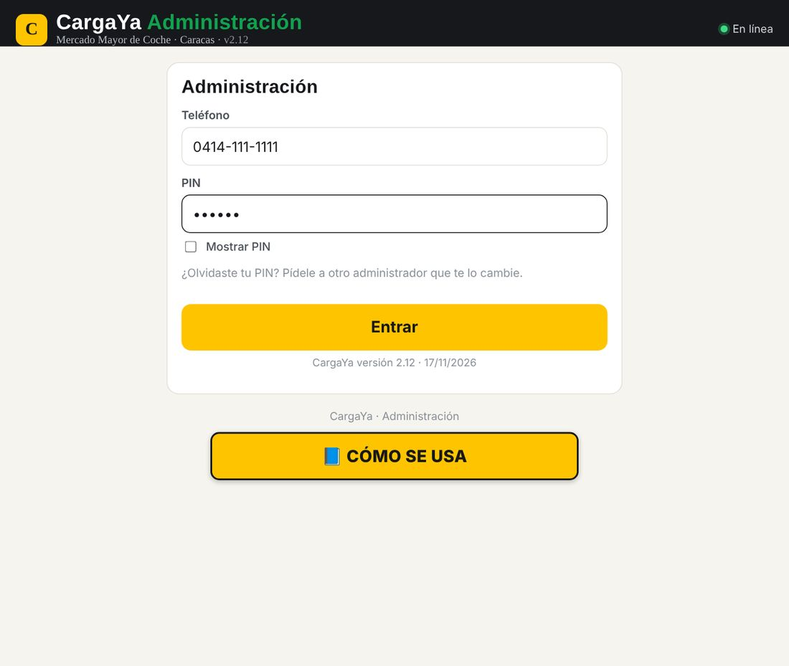
2Panel
- Números del día y el plano con los vehículos y camiones.
- Al final: Respaldo, Cambiar PIN de un usuario y Administradores.
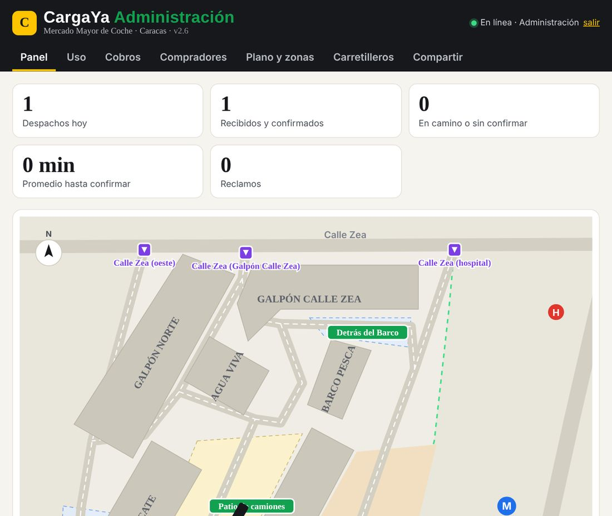
3Respaldo semanal
- En Panel → Respaldo toca Descargar respaldo en Excel (una hoja por tema).
- Toca también Copia técnica (.json): sirve para restaurar los datos.
- Guarda los dos archivos en tu computadora una vez por semana.
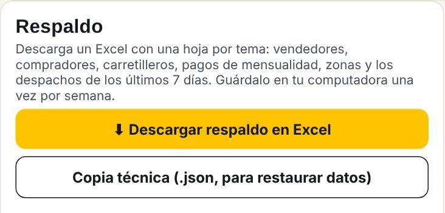
4Cambiar el PIN de alguien
- En Panel → Cambiar PIN de un usuario, escribe su teléfono y un PIN nuevo de 6 números.
- Toca Cambiar PIN y díselo por WhatsApp.
💡 Vendedores y compradores pueden recuperar su PIN solos con su palabra secreta (Ya tengo cuenta → ¿Olvidaste tu PIN?). Usa esta opción solo si no recuerdan la palabra o no la crearon. Cada recuperación y cada bloqueo por intentos fallidos queda en la Actividad.
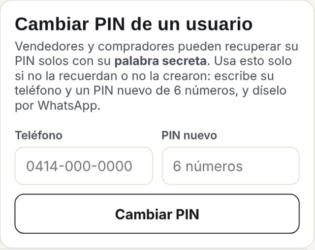
5Agregar otro administrador
- En Panel → Administradores, escribe su teléfono.
- Si todavía no tiene cuenta, escribe también un PIN para crearla.
- Toca Agregar administrador. Para quitarlo, toca Quitar dos veces.
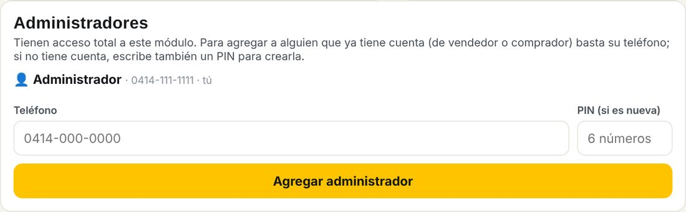
6Uso de la app
- La pestaña Uso muestra compradores y vendedores registrados y activos, despachos por día y por semana, confirmaciones y reclamos.
- Abajo, el detalle por comprador y por vendedor.
- ⬇ Excel descarga todo.
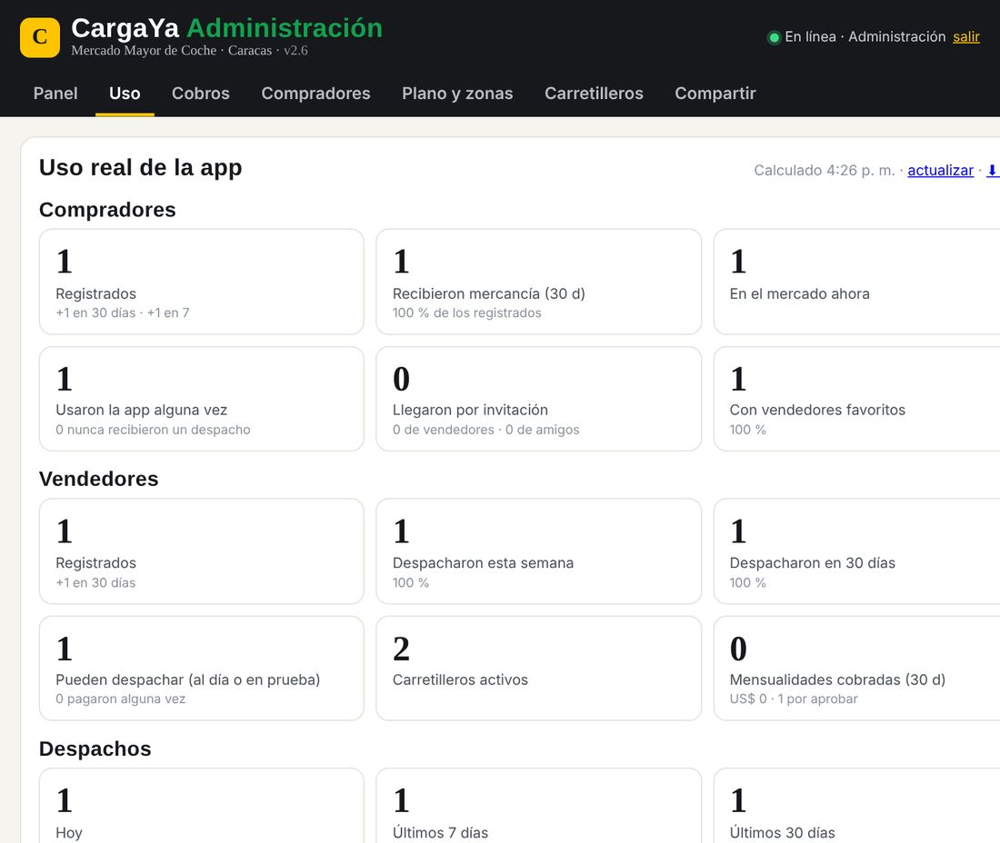
7Cobros: datos de Pago Móvil
- En Cobros → Ajustes, carga el precio mensual, la tasa del día y tus datos de Pago Móvil.
- Elige los días de prueba gratis y de gracia.
- Toca Guardar ajustes. Actualiza la tasa cuando cambie.
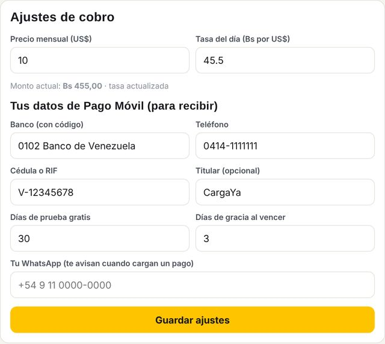
8Cobros: aprobar pagos
- En Cobros → Por revisar aparecen los pagos que cargan los vendedores.
- Verifica en tu banco la referencia y el monto.
- Toca Aprobar (+1 mes), o Rechazar escribiendo el motivo.
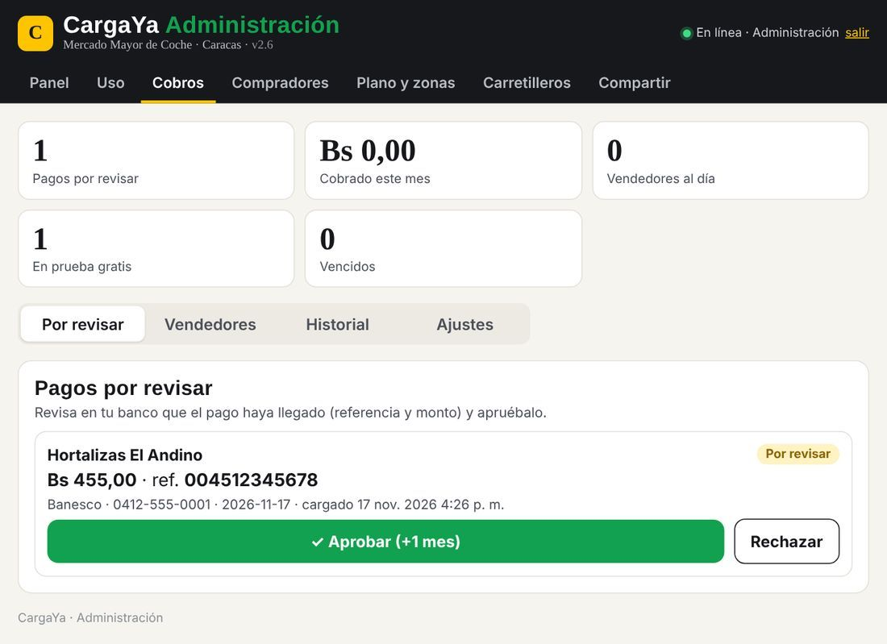
9Compradores registrados
- La pestaña Compradores lista a todos, con buscador por placa, nombre o teléfono.
- Filtra por En el mercado ahora o Se fueron.
- ⬇ Excel descarga la lista.
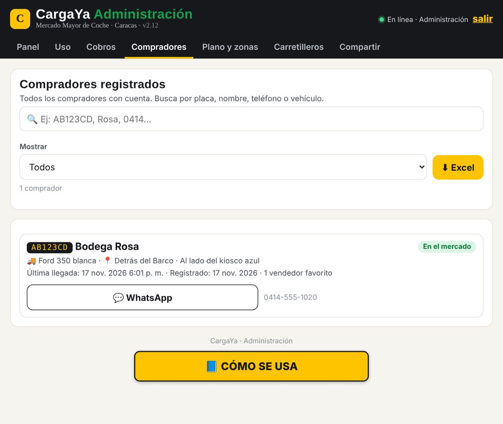
10Plano y zonas
- Zonas: escribe el nombre que usa la gente, dibuja el área tocando sus esquinas y marca el centro.
- Entradas, pasillos, galpones y filas de estacionamiento: se agregan, redibujan o quitan tocando el plano.
- Los pasillos se usan para calcular el camino que ve el carretillero.
💡 🛰 Imagen satelital de fondo: sube una captura del mercado y úsala de guía; solo se ve en esta pestaña. Con ✏️ Ajustar arrastras los puntos de un galpón, fila o pasillo para corregirlo, tocas un borde para agregar un punto y quitas el que marques.
💡 Los galpones se ven transparentes (solo el contorno punteado del techo): puedes dibujar filas de estacionamiento debajo. Al dibujar, usa 🔍 Ver de cerca y elige el galpón para acercarte.
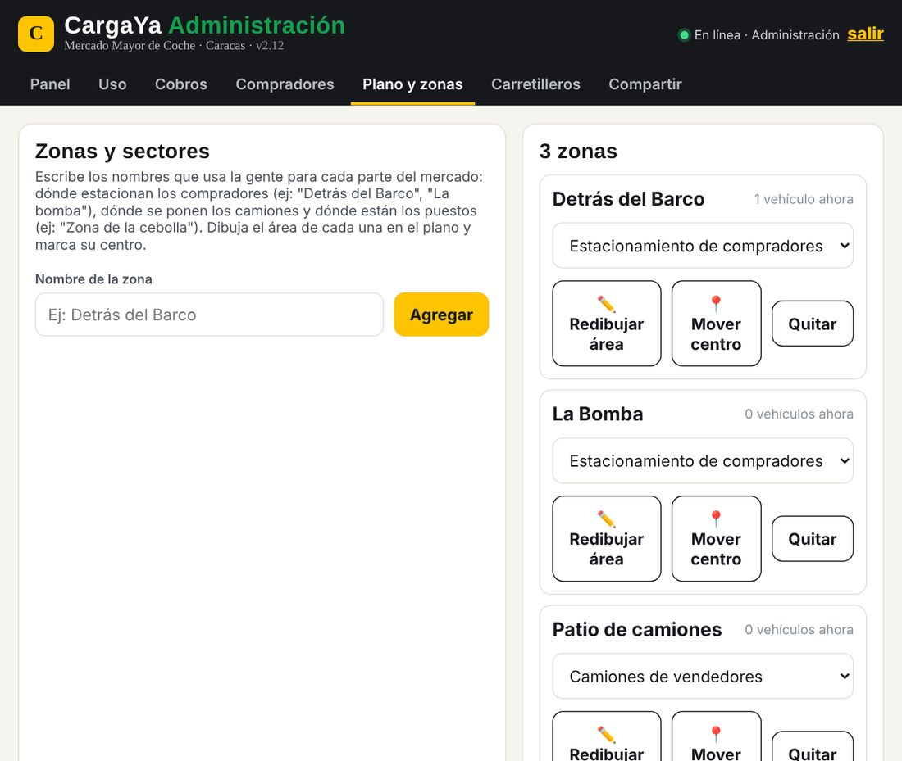
11Carretilleros y credenciales
- La pestaña Carretilleros muestra los de todos los vendedores.
- Puedes agregar a cualquier vendedor e imprimir credenciales (4 por hoja A4, con dorso).
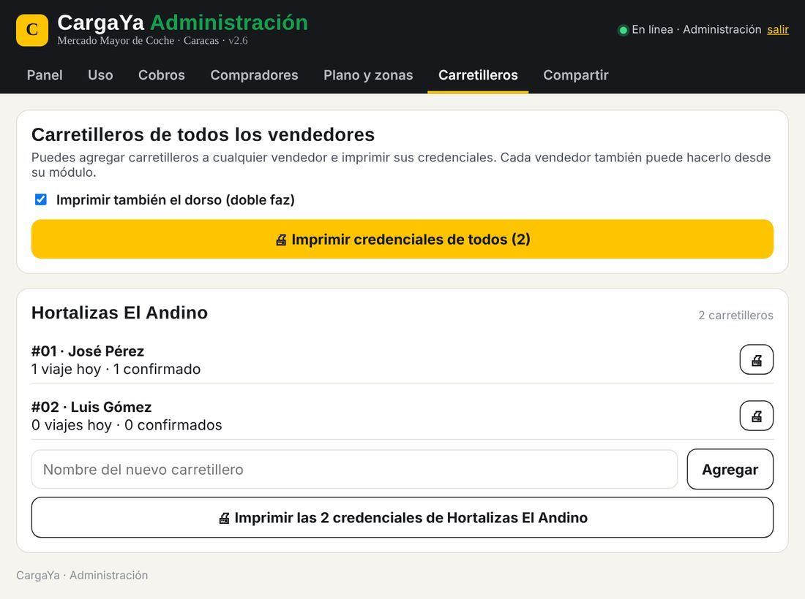
12Carretilleros con teléfono (interruptor)
- En Carretilleros, tarjeta 📱 Carretilleros con teléfono, toca Activar.
- Desde ese momento cada vendedor ve el botón 📱 Activar su teléfono en sus carretilleros.
- Para apagarlo, toca Desactivar dos veces: los carretilleros vuelven a trabajar solo con la credencial y la papeleta.
💡 La primera vez, antes de activarlo, hay que cargar en Supabase el archivo carretillero-movil.sql (una sola vez).
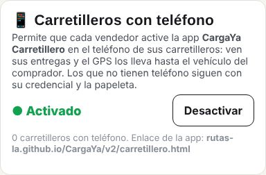
13Reclamos por faltantes
- En Panel, arriba, la tarjeta ⚠ Reclamos por faltantes muestra los últimos 30 días.
- Cuántos hubo, cuántos siguen sin resolver y cuánto tardan en promedio en resolverse.
- Qué vendedores y qué carretilleros tienen más reclamos, y cómo se resolvieron.
- Abre Ver los sin resolver para ver cuáles siguen pendientes y desde hace cuánto.
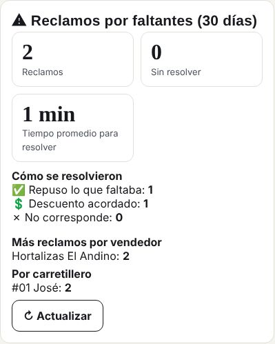
14Avisos push
- Vendedores, compradores y carretilleros pueden activar avisos que suenan aunque la app esté cerrada.
- Avisan de: despacho nuevo (al comprador y al carretillero), entrega confirmada, reclamo (al vendedor, urgente), reclamo resuelto (al comprador) y mensualidad aprobada o rechazada.
- La primera vez se configura en Supabase (archivo push.sql y la función enviar-push). Mientras no esté configurado, la tarjeta “Activa los avisos” no aparece.
15Compartir los QR de registro
- En Compartir están los QR para vendedores y compradores.
- Compartir imagen o Enviar link por WhatsApp.
- Abrir para imprimir saca carteles para pegar en el mercado.
💡 Desde aquí también puedes mandar estos instructivos: los enlaces están al final de la pestaña.
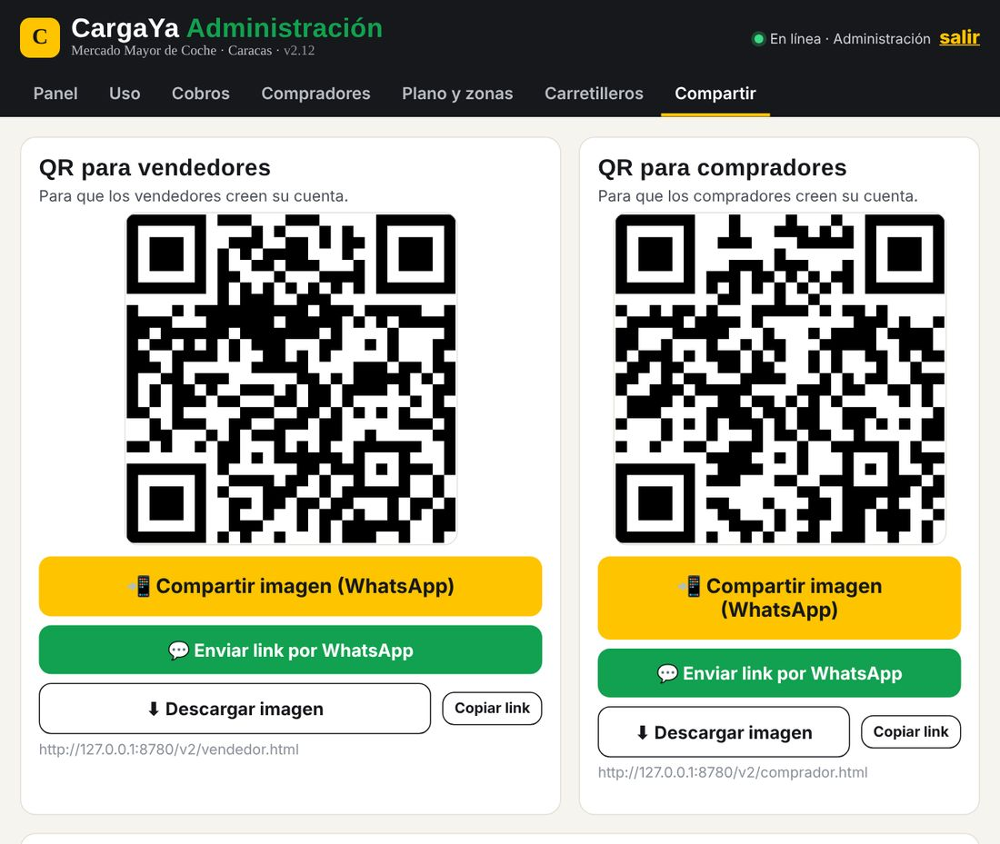